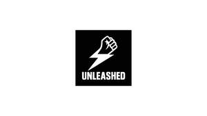

Trade Mark Journal No.2025/049 5 December 2025
UK00004299031 22 November 2025 (3,25,28,35)
Mark 1
Mark 2

- Class 3
- Skin care cosmetics; Exfoliants for the care of the skin; Essences for skin care; Skin care mousse; Skin care preparations; Skin care oils [cosmetic]; Skin care lotions [cosmetic]; Skin care creams [cosmetic]; Cosmetic creams for skin care; Milky lotions for skin care; Cleansing milks for skin care; Skin care oils [non-medicated]; Skin care creams, other than for medical use; Skin care (Cosmetic preparations for -); Cosmetic preparations for skin care; Skin care products for animals; Hand masks for skin care; Foot masks for skin care; Skin, eye and nail care preparations; Non-medicated skin care preparations; Perfumed oils for skin care; Wrinkle removing skin care preparations; Hair care creams; Horse oil cream for skin care; Body care cosmetics; Hair care lotions; Hair care serums; Hair care serum; Cosmetics for use in the treatment of wrinkled skin; Hair care creams [for cosmetic use]; Hair care lotions [for cosmetic use]; Beauty creams for body care; Hair care masks; Lotions for face and body care; Cosmetic products in the form of aerosols for skin care; Cosmetics for the treatment of dry skin; Sun care lotions [for cosmetic use]; Sun care lotions; Skin moisturizers; Skin moisturizer; Soaps for body care; Hair care agents; Cosmetics for protecting the skin from sunburn; Hair care preparations; Cosmetic hair care preparations; Facial care preparations; Cosmetic preparations for body care; Skin emollients; Skin lotions; Lotions for the skin; Skin lotion; Deodorants for body care; Skin moisturisers; Skin moisturiser; Skin make-up; Preparations for the care of the body; Skin cleansers; Beauty care cosmetics; Eye care products, non-medicated; Skin hydrators; Skin moisturizers used as cosmetics; Skin creams; Creams for the skin; Body cleaning and beauty care preparations; Oil baths for hair care; Skin lighteners; Skin cleansers [cosmetic]; Moisturizing preparations for the skin; Skin cleansing lotion; Cosmetic nail care preparations; Moisturising skin lotions [cosmetic]; Cosmetic creams for the skin; Skin creams [cosmetic]; Skin creams [for cosmetic use]; Skin relief serum [cosmetic]; Beauty care preparations; Non-medicated body care preparations; Skin balms [cosmetic]; Skin moisturizer masks; Non-medicated skin serums; Cosmetic creams for dry skin; Oils for the skin; Colour cosmetics for the skin; Sun care preparations for cosmetic use; Skin cream; Moisturising skin creams [cosmetic]; Skin conditioners.
- Class 25
- Clothing; Knitwear [clothing]; Jackets [clothing]; Ready-to-wear clothing; Woolen clothing; Furs [clothing]; Garments for protecting clothing; Layettes [clothing]; Clothing layettes; Linen clothing; Headbands [clothing]; Headbands for clothing; Gloves [clothing]; Gloves as clothing; Clothes; Aprons [clothing]; Maternity clothing; Kerchiefs [clothing]; Jerseys [clothing]; Denims [clothing]; Shorts [clothing]; Cashmere clothing; Capes (clothing); Oilskins [clothing]; Gabardines [clothing]; Leather clothing; Clothing of leather; Leather (Clothing of -); Silk clothing; Parts of clothing, footwear and headgear; Collars [clothing]; Veils [clothing]; Knitted clothing; Windproof clothing; Hoods [clothing]; Embroidered clothing; Corsets [clothing, foundation garments]; Wristbands [clothing]; Belts [clothing]; Belts for clothing; Bandeaux [clothing]; Rainproof clothing; Waterproof clothing; Casual clothing; Visors [clothing]; Jackets being sports clothing; Jackets (Stuff -) [clothing]; Stuff jackets [clothing]; Playsuits [clothing]; Bottoms [clothing]; Clothing for leisure wear; Ready-made clothing; Latex clothing; Trunks being clothing; Infant clothing; Woven clothing; Drawers [clothing]; Leisure clothing; Drawers as clothing; Clothing for sports; Sports clothing; Athletic clothing; Ties [clothing]; Clothing for children; Muffs [clothing]; Bodies [clothing]; Clothing for babies; Clothing for infants; Tops [clothing]; Weatherproof clothing; Clothing for cycling; Pockets for clothing; Fabric belts [clothing]; Water-resistant clothing; Triathlon clothing; Handwarmers [clothing]; Clothing for skiing; Beach clothing; Thermal clothing; Chaps (clothing); Cowls [clothing]; Men's clothing; Fishing clothing; Braces for clothing; Mitts [clothing]; Dance clothing; Cap visors; Cap peaks; Peaks (Cap -); Caps; Baseball caps; Baseball caps and hats; Caps with visors; Skull caps; Caps [headwear]; Caps being headwear; Garrison caps; Peaked caps; Shower caps; Caps (Shower -); Bucket caps; Swimming caps [bathing caps]; Waterpolo caps; Bathing caps; Sports caps and hats; Knot caps; Swim caps; Cycling caps; Swimming caps; Knitted caps; Sports caps; Flat caps; Golf caps; Baseball hats; Bobble hats; Beanie hats; Thermal headgear; Woolly hats; Sedge hats (suge-gasa); Top hats.
- Class 28
- Finger stretching resistance bands; Exercise bands; Grip bands for tennis rackets; Grip bands for badminton rackets; Resistance parachutes for athletic training; Grip bands for squash rackets; Grip bands for table tennis bats; Manually operated rings for lower and upper body resistance exercise.
- Class 35
- Retail services connected with the sale of clothing and clothing accessories.
Plan B & Associates Limited